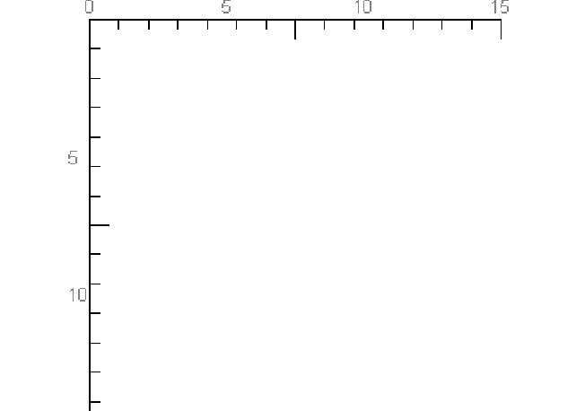

RuleMark and RuleLabels permit to create some mark or some labels in a vertical or horizontal position. The distance between each marks or labels is based on the size of the component (RuleMark or RuleLabels). These components are used in the Slider component; see the documentation of this component to understand how RuleMark and RuleLabels are created. Below, this is an example of RuleMark and RuleLabels components to create a rule for a graphic canvas or an editor for example.

To import the RuleMark class, just do this:
To create a RuleMark component you need specify 4 parameters. One parameter is optional; the others are required and cannot be have a default value.
A RuleLabels component extends the RuleMark component, but instead of writing some marks, some labels are displayed. To import the class do this:
Like the RuleMark, the RuleLabels needs 4 parameters but instead of specifying the number of marks, we specify an array of labels where labels are just string characters. So the number of labels is calculated by the length of the array. Also, we specify the style for the labels and not the size. The style is exactly the same than a CSS style. (color, font-family,margin…)
Below stands an example, which demonstrates how to create the rule presented in the screenshot at the beginning of this chapter. Note that in the project TatamiDemo there are no example. The use of RuleMark and RuleLabels is hidden by the Slider component in the SliderDemo class.